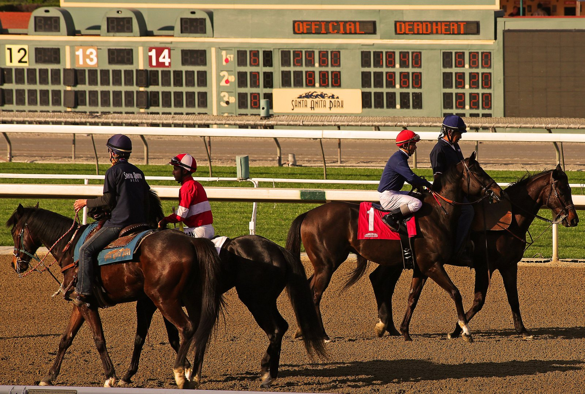

Ascot afronta un Champions Day sin cabeza de cartel
El Qatar Racing British Champions Day llega este año a Ascot sin una historia que marque la tarde, después de que Constitution River descartara a última hora la QEII.

La jornada ha dejado escenas que el aficionado recuerda bien. Frankel ganó la QEII en la primera edición y, al año siguiente, se despidió de las pistas peleando la Champion Stakes.
En 2011, Christophe Soumillon recibió una multa cuantiosa por incumplir las nuevas reglas del látigo a lomos de Cirrus Des Aigles, y acabó pidiendo donativos para pagarla. Diez años después, Baaeed se impuso en la QEII.
El año pasado, Powerful Glory dio la sorpresa en la Sprint a 200/1. Frankie Dettori se retiró ganando la Champion Stakes con King Of Steel, aunque poco después volvió a montar en una gira de despedida por todo el mundo.
Esta edición no tiene un favorito que concentre las miradas. Constitution River, bajando a la milla, podía haber sido ese caballo. Seguirá, sin embargo, en los diez furlongs: Coolmore cambió de planes 48 horas después de pagar 70.000 libras para inscribirlo en la QEII.
Ombudsman y Calandagan figuran entre los nombres a seguir en la previa.
Por Martín Larrañeta